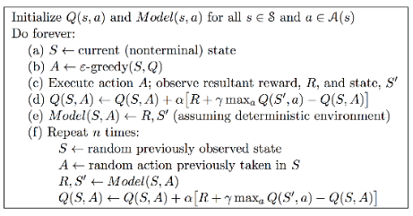
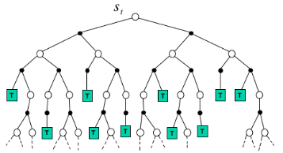
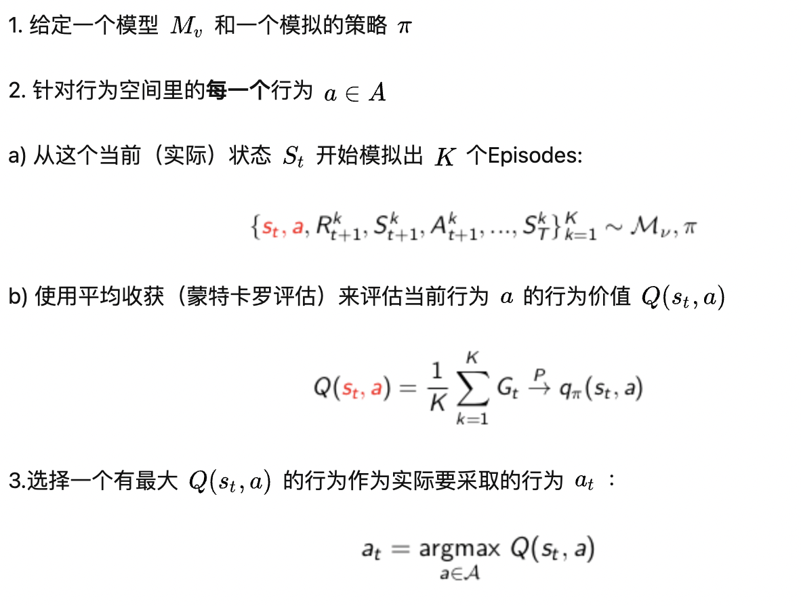
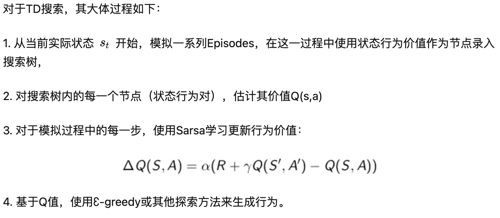

集成学习和规划
集成学习和计划
这一节主要介绍基于模型的强化学习方法，也就是基于经验对环境建模，再根据建模得到的函数得到价值函数或者策略。这种方法的好处在于，学习价值函数或者策略不再需要和真实环境进行交互。前面介绍的方法都是免模型的方法，也就是不对环境建模，直接从经验中学习价值函数或者策略。
基于模型的强化学习
这个过程大体是这样的：首先通过和环境的交互得到一些经验，根据这些经验建立一个虚拟的对于环境的模型，在这个环境中planning得到价值函数或者策略函数。获得的策略函数在真实环境中acting，得到更多的经验。经验丰富模型。模型更新策略。。。。
基于模型的强化学习：
优点：
- 对环境建模过程是有监督的，学习高效
- 可以推理模型的不确定性
缺点：
- 首先学习一个模型，再构建价值函数。pipeline会导致误差累积
what is a model
表现了概率的转移和奖励
通常假设状态转移函数和奖励函数是条件独立的：
model learning
模型的学习过程是一个有监督的过程，输入是状态和action，输出是真实的reward和下一个状态。
学习 是一个回归的过程
学习 是一个密度估计的过程。用均方误差，KL散度之类的表示损失函数
找到可以最小化loss的参数
根据使用的算法不同，可以有如下多种模型：查表式(Table lookup Model)、线性期望模型(Linear Expectation Model)、线性高斯模型(Linear Gaussian Model)、高斯决策模型(Gaussian Process Model)、和深信度神经网络模型(Deep Belief Network Model)等。但是这里只介绍查表模型来解释模型的构建
查表模型
用N(s, a)表示遇见sa对的数量，估计P和R：
Planning with a Model
模型的规划是让我们根据环境模型找到最优策略或价值函数
我们可以采用前面介绍的动态规划，策略迭代，值迭代等方法。这里我们同样介绍一种简单的规划方法：基于采样的规划
基于采样的规划
首先进行虚拟采样，也就是根据建模得到的状态转移概率和回报函数进行采样，具体的：
有了这些虚拟采样之后，就可以采用之前的免模型的强化学习方法了，比如：
- 蒙特卡罗控制
- Sarsa
- Q-learning
架构整合 Integrated Architectures
这一节将基于模型的和免模型的结合起来。因此个体有两个经验的来源：实际经历和模拟经历：
实际经历：
模拟经历：
现在我们有model-free和model-based两种方式：
model-free：
- No model
- 从真实经历中学习价值函数或策略
Model-based:
- 从真实经历中学习环境模型
- 从虚拟经验中规划价值函数或策略
两种方式结合可以得到Dyna方法：
- 从真实经历中学习环境模型
- 根据真实经历和虚拟经历学习和规划价值函数或策略
Dyna
前面介绍基于模型的方法思路：首先通过和环境的交互得到一些经验，根据这些经验建立一个虚拟的对于环境的模型，在这个环境中planning得到价值函数或者策略函数。获得的策略函数在真实环境中acting，得到更多的经验。经验丰富模型。模型更新策略。。。。
Dyna：获得的真实的经验也会直接作用于价值函数或策略
Dyna是一类模型指的就是结合了model-free和model-based的方法。这里先介绍Dyna-Q算法：
d 步骤是学习真实经历
e 步骤是建模
f 步骤是学习虚拟经历，可以认为是思考的过程
Dyna可以一定程度上更好的应对环境的变化
基于模拟的搜索 Simulation-based search
这一部分会介绍如何将前向搜索和模拟经验结合起来来更好的做规划。首先会介绍前向搜索。
前向搜索根据建模得到的模型进行前向搜索。这体现了分治思想，它每次只着眼于当前和下一步构建它和子MDP问题的关联。具体的：
白色的为状态。黑色代表不确定状态，也就是状态s采取a之后有多种可能，这几种可能由它的子节点表现。绿色代表终止状态。
不需要构建完整的搜索树，只当前状态为根构建搜索树。
因此基于模拟的搜索就是首先根据模型在前向搜索树上找到一条路径，再采用免模型强化学习方法来寻找最优策略。这个免模型方法如果是蒙特卡罗控制，那么这个过程叫做蒙特卡罗搜索。如果使用Sarsa控制，那么这个过程叫做TD搜索。
简单蒙特卡罗搜索
简单来说就是将蒙特卡罗控制使用的经验变成了模拟经验。这样通过大量的采样就可以判断当前的策略可以在当前状态下每一个action的表现。具体的：
蒙特卡罗树搜索
给定一个模型，使用当前的模拟策略模拟K个从当前状态开始的episode：
根据这些经验构建搜索树（包含状态和行为）。根据均值评估Q函数：
在搜索树中选择action，更新模拟策略（比如-greedy）：
搜索树不包括整个状态行为对的空间，因此对于不同状态要分情况讨论：
- 搜索树中存在的状态行为对，策略更新倾向于最大化Q值，也就是确定性策略。
- 搜索树中不存在的状态行为对，策略采用固定的随机策略
这个方法就是在某个状态 对于模拟经历使用蒙特卡罗控制找到为根的最优策略
TD 搜索
TD搜索也类似，只是采用了TD更新Q函数：
